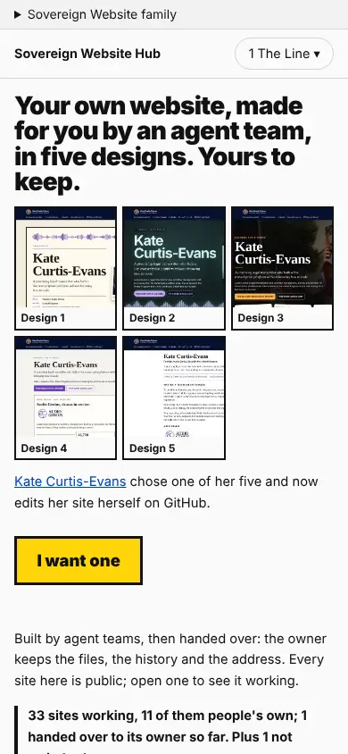
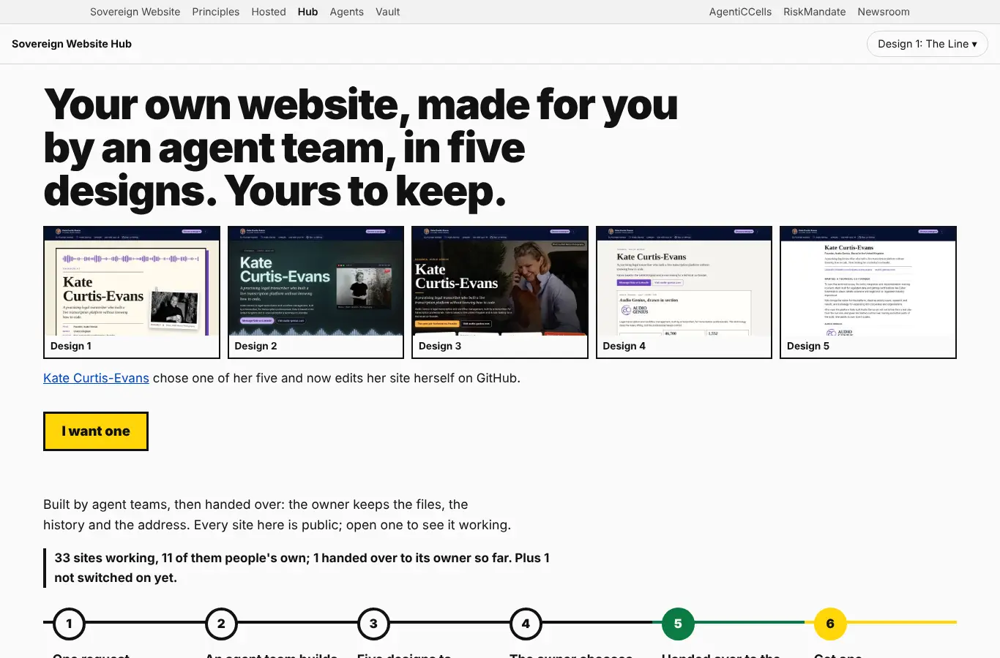

Synthetic users: the hub, round 9: "Would you want one?"
Site: https://hub.sovereignweb.site/. The Line and The Register were captured at 4f23d10 (v0.1.35); The Gallery, Contact Sheet and The Street at 5c6bb6a (v0.1.36), which deployed during the capture. Run: 23 November 2026, about 13:35 UTC, by design.b.rounds. The Line is now the home page, with the brief's case on its first screen: - "Your own website, made for you by an agent team, in five designs. Yours to keep."; - Kate's site in its five designs; - an "I want one" button.
Method: Synthetic users, the hub's own test, with the same five personas as round 8. These are simulations, and never replace a real person.
Yes counts
| Design | P1 self-employed | P2 rents from a builder | P3 creative | P4 low vision | P5 sceptic | Yes | Round 8 |
|---|---|---|---|---|---|---|---|
| The Line (home) | yes | no | yes | yes | no | 3/5 | 1/5 |
| The Register | no | yes | no | yes | no | 2/5 | 1/5 |
| The Gallery | no | no | yes | no | no | 1/5 | 1/5 |
| Contact Sheet | no | no | yes | no | no | 1/5 | 1/5 |
| The Street | yes | no | yes | yes | no | 3/5 | 3/5 |
Did "I want one" satisfy them? 0 of 25. Every persona who followed it reached "There is no request form yet" and a link to another site for prices.
Why not, ranked (reason mentions across the 15 noes)
- No way to actually ask for one ("There is no request form yet"; sent to another site): 11.
- No price on the page: 9.
- Unproven, only one site handed over: 5 (every one of the sceptic's noes).
- The design says "not for someone like me" (a land registry, an art gallery, a photographer's sheet): 4.
- It does not say who I deal with or who looks after it: 3.
- Hard to read (always dark; small grey or monospace text): 2.
The noes, verbatim, under their main reason:
- No price, no one to deal with, no form
- The Line, P2: "It never tells me what it costs or who looks after it once it's mine; the button just says 'There is no request form yet' and sends me to sovereignwebsite.ai for the prices. My builder at least shows a monthly price."
- The Gallery, P2: "No price anywhere, and the 'Want one?' line is small grey text below the big Kate picture; to find out anything I'm sent to another site."
- Contact Sheet, P2: "It doesn't say the price or who I'd deal with; 'here is how to start' just says there's no form and to read the prices on sovereignwebsite.ai."
- The Street, P2: "'Walk in' just takes me to other people's shops; nowhere does it say what it costs per month or year or who I'd ring if it breaks, and 'Want one?' says there is no request form yet."
- The Street, P5: "Charming shopfronts, but 'Want one?' leads to 'There is no request form yet' and a different website for prices. Only 1 handed over. Not yet."
- Unproven, one handed over
- The Line, P5: "'1 handed over to its owner so far' out of 33 is one customer, and 'I want one' ends at 'There is no request form yet'. I'd wait until there's a way to actually order one."
- The Register, P5: "Read the entries: 'Held: SovereignWebsite, until handed over' on every one except Kate's. So they still hold ten of the eleven people's sites, and there's no form and no price."
- The Gallery, P5: "Lovely frames, but it's a showroom of other people's sites, and of the 'people's own' ones only Kate's is 'Handed over'. No form, no price."
- Contact Sheet, P5: "A big red circle round the one site that was handed over tells you it's the only one; 33 sites, mostly their own demos and made-up companies, and no way to order."
- Not for someone like me
- The Register, P1: "It reads like the Land Registry, 'The register of title', 'Entry 01', and nothing tells me what I'd get or pay; 'Want one?' is under Kate's whole entry and says 'There is no request form yet'."
- The Register, P3: "It's a legal ledger: the pictures are small thumbnails next to 'Kind', 'Held', 'Status'. I can't feel the work, so it doesn't make me want a portfolio."
- The Gallery, P1: "Dark gold frames and 'Room one' feel like an art gallery, not a site for an electrician; and the page never says what it costs or how I'd start beyond 'There is no request form yet'."
- Contact Sheet, P1: "'Roll 01 · The Showroom', film strips and typewriter text: this is for photographers, not me. And it says 'There is no request form yet'."
- Hard to read
- The Gallery, P4: "It stays dark whatever my phone is set to, with small grey body text on near-black; the 'Want one?' line is the faintest thing on the screen and I had to scroll to find it."
- Contact Sheet, P4: "The numbers are in a typewriter font in a long ragged paragraph, the links are small and underlined in mono, and it's dark even in light mode. Hard work for my eyes."
What made a persona lean towards yes
- The Line: the new headline with Kate's five designs under it (P1, P3), and the yellow "I want one" button, "the easiest button on any of these pages to find" (P4).
- The Register: "Held: By its owner, since 20 November 2026" with the Files link (P2).
- The Gallery: Kate's site large in a gold frame (P3).
- Contact Sheet: eleven people's sites, each marked "Five designs" (P3).
- The Street: the address on each shop sign, with "Walk in →" (P1).

